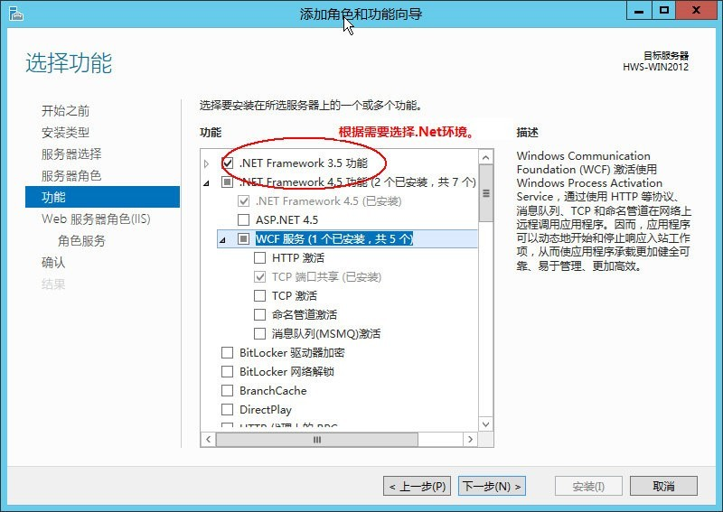
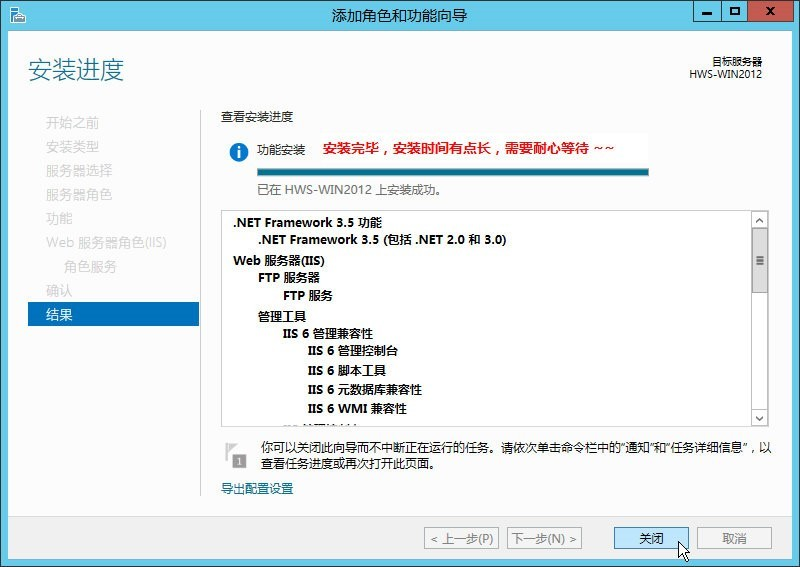

Windows2012安装IIS和FTP
Windows2012安装IIS和FTP
1. 安装IIS
- 打开Windows 2012的服务器管理器，选择 管理→添加角色和功能。

- 进入 添加角色和功能向导，选择 “Web服务器(IIS)”。

- 根据情况选择对应功能，这里选择.Net3.5。
 - 安装角色服务，选择对应的安全性选项，如图。

- 选择“FTP服务器”，以及开设主机必须要用的“管理工具”，此项重要。

- 等待安装，时间稍长，耐心等待即可。
 - 安装完毕，打开IIS管理器查看。

- 打开了IIS管理器，看到程序池，站点，至此，在Windows2012下安装IIS已经成功。
2. 安装FTP
- 单击图标进入服务器管理器。

- 单击 IIS， 右击服务器，选择 Internet 信息服务（IIS）管理器。

- 右击服务器，选择添加 FTP 站点。
- 填写 FTP 站点名称，选择 FTP 路径，单击下一步。

- IP地址选择全部未分配，SSL选择无SSL。

- 身份验证选择基本，授权选择所有用户 ，权限设置为读取与写入 。单击完成。

- 使用系统默认的 administrator 账号和密码，进行登录测试，现在您可以可以正常上传下载文件。

3. 阿里云安全设置开发ftp端口
添加规则选择FTP

遇到的问题与解决办法
1.Xftp 提示无法显示远程文件

点击属性->选项->将使用被动模式选项去掉即可

* 如果还不行请检查目录是否属于当前用户下的目录，用户是否有权限访问当前目录
摘自
Windows2012安装IIS和FTP
云服务器 ECS Windows Server 通过 IIS 配置 FTP
Xftp 提示无法显示远程文件夹
本博客所有文章除特别声明外，均采用 CC BY-SA 3.0协议 。转载请注明出处！